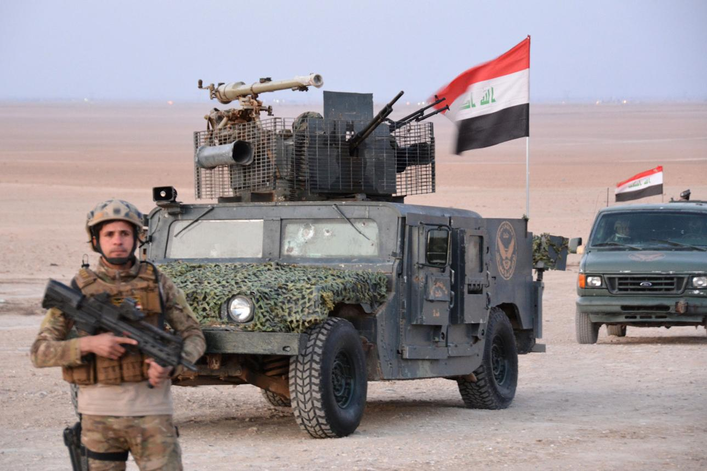

ئۆپەراسیۆنێکی ئەمنی لە پیرێ؛ سێ گومانلێکراوی داعش کوژران و کەسێک دەستگیر کرا

هێزە ئەمنییەکانی عێراق لە ئۆپەراسیۆنێکی تایبەت لە ناوچەی پیرێ (ئالتون کوپری)، لە پارێزگای کەرکووک، سێ کەسیان کوشت کە بە تۆمەتی تیرۆریستی ناوبراون، هەروەها کەسێکی دیکەیان دەستگیر کرد کە تۆمەتبارە بە گواستنەوەی ئەو کەسانە.
ئەم ئۆپەراسیۆنە لە کاتێکدا ئەنجام درا کە زانیارییە ئەمنییەکان باسی جووڵەی ئۆتۆمبێلێکی گومانلێکراویان دەکرد کە چەند کەسێکی گومانلێکراوی داعش لەخۆ گرتبوو. بەدوای ئەو زانیارییانەدا، هێزەکانی سوپای عێراق بە ئاراستەی ناوچەکە جووڵان و ڕێگای سەرەکیی هەولێر–کەرکووک بە کاتی داخرا.
چۆنیەتی دەستپێکردنی ئۆپەراسیۆنەکە
بەپێی ڕاپۆرتی کوردستان٢٤، زانیارییە ئەمنییەکان ئاماژەیان بەوە کردووە کە ئۆتۆمبێلێک چەند کەسێکی گومانلێکراوی داعش لەخۆ گرتووە و چوونەتە ناوچەی پیرێ.
دوای گەیشتنی ئەو زانیارییانە، هێزێکی گەورەی سوپای عێراق بە سەرپەرشتیی فەرماندەی ئۆپەراسیۆنەکانی کەرکووک چووەتە ناوچەکە. لە چوارچێوەی ئەو هەنگاوانەدا، ڕێگای هەولێر–کەرکووک و ڕێگای پیرێ–کەرکووک بە کاتی داخراون بۆ کۆنترۆڵکردنی جووڵە و پاراستنی سەلامەتیی هاووڵاتییان.
کوژرانی سێ کەس و دەستگیرکردنی کەسی چوارەم
خانەی میدیایی ئەمنیی عێراق لە ڕاگەیاندنێکدا ئاماژەی بەوە کردووە کە ئۆپەراسیۆنەکە کاتژمێر ٨ی ئێوارە ئەنجام دراوە و هێزەکانی سوپای عێراق بە هاوکاریی فڕۆکەکانی سوپا هێرشێکی ئاسمانیی وردیان ئەنجام داوە.
بەپێی ڕاگەیاندنەکە، سێ کەس کوژراون و ئەو کەسەش دەستگیر کراوە کە بەرپرسیار بووە لە گواستنەوەی ئەوان. هەروەها هێزە ئەمنییەکان گەڕان و پشکنینی ناوچەکەیان بەردەوام کردووە.
ڕۆژنامەی The New Region بە پشتبەستن بە سەرچاوەکانی خۆی ڕاپۆرتی داوە کە کەسانی ئامانجکراو ئەندامی داعش بوون. بەڵام ڕاگەیاندنی فەرمیی خانەی میدیایی ئەمنیی عێراق بە وشەی «تیرۆریست» ئاماژەی پێکردوون و بە ڕوونی ناوی داعش نەهێناوە؛ بۆیە ئەم جیاوازییە دەبێت لە ڕاپۆرتەکەدا ڕەچاو بکرێت.
دۆخی ناوچەکە دوای ئۆپەراسیۆن
سەمیر شەوانی، بەڕێوەبەری پۆلیسی پیرێ، بە کوردستان٢٤ی ڕاگەیاندووە کە هێزەکانی سوپا چەند شوێنێکیان لە ناوچەکە پشکنین کردووە و دوای تەواوبوونی ئۆپەراسیۆنەکە، دۆخی ئەمنی گەڕاوەتەوە ئاسایی.
بەپێی قسەکانی، هێزەکان لە هەندێک شوێن کشاونەتەوە، بەڵام چەند ئۆتۆمبێلێکی سەربازی بۆ دڵنیابوون لە بارودۆخی ئەمنی و پاراستنی ناوچەکە ماونەتەوە.
کەلێنە ئەمنییەکان و نیگەرانیی دانیشتووان
ئەم ڕووداوە جارێکی دیکە گرنگیی دۆخی ئەمنی لە دەوروبەری پیرێ و ناوچە کێشەدارەکانی نێوان هەرێمی کوردستان و حکومەتی فیدراڵی عێراقی خستووەتەوە پێشەوە.
بەپێی ڕاپۆرتی کوردستان٢٤، هەندێک ناوچەی دەوروبەری پیرێ بەهۆی فراوانی زەوی کشتوکاڵی و قورسایی کۆنترۆڵکردنیانەوە، دەتوانن ببنە شوێنی شاربوونەوە و جووڵەی چەکدارانی داعش. هەروەها هەندێک لە دانیشتووانی گوندەکانی دەوروبەر نیگەرانیی خۆیان لە بارودۆخی ئەمنی دەربڕیوە و داوای دڵنیایی و پاراستنی زیاتر دەکەن.
پێویستیی هاوئاهەنگیی ئەمنی
ئۆپەراسیۆنی ١٣ی نۆڤەمبەر نیشانەی ئەوەیە کە هەرچەندە داعش لە ڕووی کۆنترۆڵکردنی خاکەوە لە عێراق شکست خواردووە، بەڵام هێشتا جووڵەی خانە نهێنییەکان و مەترسییە ئەمنییەکان لە هەندێک ناوچەی دوور و ناکۆکیدا بەردەوامە.
بۆ ڕێگریکردن لە گەڕانەوەی ئەم مەترسییە، پێویستە هاوئاهەنگیی نێوان هێزە ئەمنییەکانی عێراق و پێشمەرگە بەهێز بکرێت، کەلێنە ئەمنییەکان چارەسەر بکرێن و سەلامەتیی دانیشتووان و گەڕانەوەی ئاسوودەیان بۆ گوندەکانیان ببێتە پێشینە.
📌 پاراستنی سەلامەتیی هاووڵاتییان و هاوئاهەنگیی نێوان هێزە ئەمنییەکان، گرنگترین هەنگاون بۆ ڕێگریکردن لە گەڕانەوەی مەترسیی داعش.